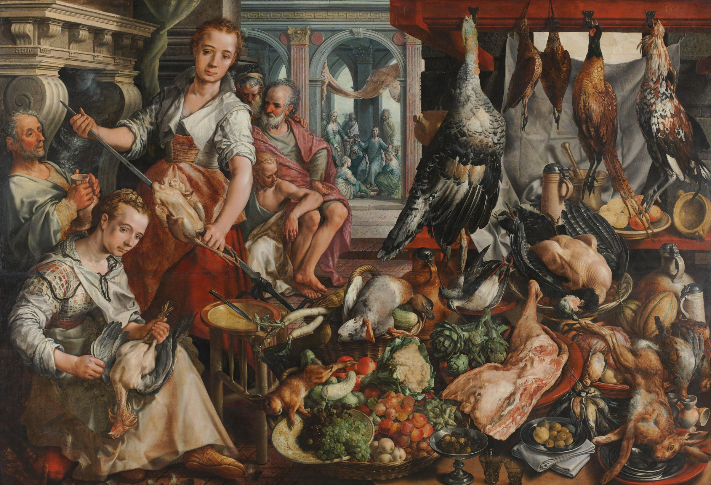

사물에는 호기심을.사람에게는 프라이버시를.
물건에 다가가면 초점이 잡히고, 클릭하면 작은 발견이 모입니다. 얼굴 위에서는 지지직거리는 프라이버시 효과만 나타납니다. 사람의 이름이나 인식 결과를 표시하거나 수집하지 않습니다.
미리 지정한 70개 사물과 얼굴 영역으로 작동하는 체험 시안입니다. 실제 AI 추론이나 자동 얼굴 분석은 하지 않습니다. 촬영한 사물은 브라우저 메모리에만 보관되며 새로고침하면 사라집니다.